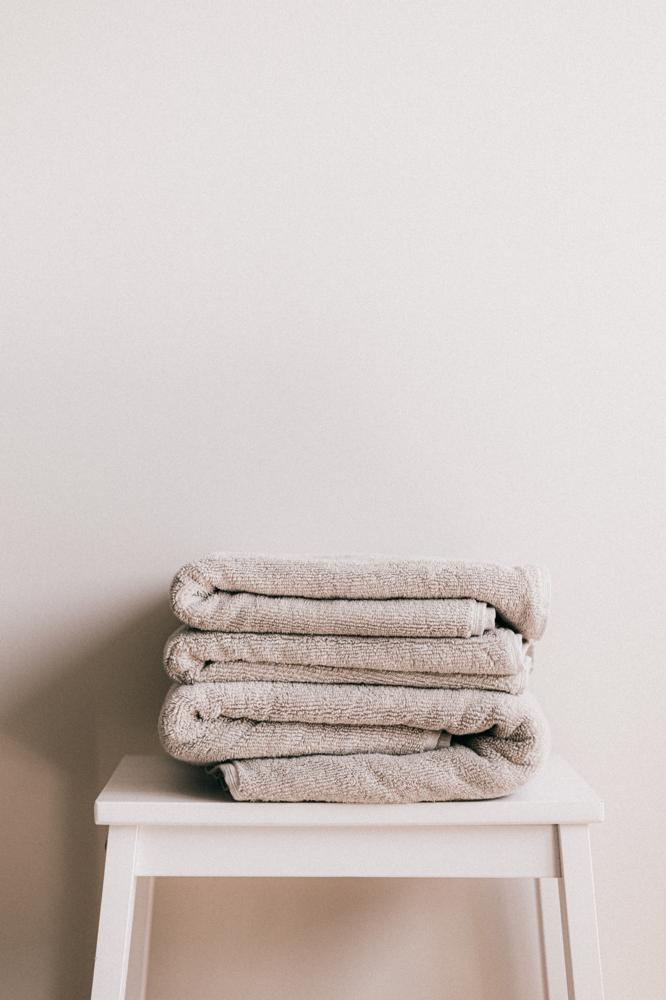

HINTS FOR A HAPPY HOME
Bathroom Declutter

Here are five practical steps to decluttering a bathroom:
1. Set a Clear Goal: Define your desired outcome for the decluttering process. Determine the level of minimalism you want to achieve and envision how you want your bathroom to look and feel after decluttering.
2. Remove and Sort: Take everything out of your bathroom cabinets, drawers, and shelves. Sort items into categories such as toiletries, medications, towels, and cleaning supplies. Discard expired or unused items.
3. Evaluate and Prioritize: Assess each item's usefulness and importance in your daily routine. Keep only the essentials and items that bring you joy or serve a specific purpose. Let go of duplicates or items you haven't used in a long time.
4. Organize and Optimize Storage: Maximize your bathroom's storage potential by utilizing organizers, bins, and drawer dividers. Assign designated spaces for each category of items, ensuring easy access and maintaining order.
5. Maintain Regular Maintenance: Once your bathroom is decluttered, commit to regular maintenance to prevent clutter from accumulating again. Establish a system to regularly review and declutter items, ensuring that your bathroom remains an organized and serene space.
Remember, decluttering is a personal journey, so adapt these steps to suit your needs and preferences. Enjoy the process of creating a clutter-free and functional bathroom that promotes a sense of peace and simplicity in your daily life.
Home Maintenance

Maintaining a clean home requires consistency and a few practical habits. Here are some tips to help you maintain a clean living space:
1. Daily Cleaning Routine: Establish a daily cleaning routine that includes quick tasks like making beds, wiping countertops, doing dishes, and tidying up clutter. Devote a few minutes each day to tackle these tasks, preventing dirt and mess from accumulating.
2. Regular Decluttering: Regularly declutter and organize your belongings. Set aside time each month to go through different areas of your home, getting rid of items you no longer need or use. Having fewer possessions makes it easier to clean and maintain a tidy environment.
3. Establish Cleaning Zones: Divide your home into cleaning zones or areas. Focus on one zone at a time, thoroughly cleaning and organizing that specific area before moving on to the next. This approach breaks down the cleaning process into manageable tasks.
4. Clean as You Go: Develop a habit of cleaning as you go about your daily activities. For example, wipe spills immediately, put away items after use, and do a quick sweep or vacuum when necessary. These small actions prevent dirt and mess from accumulating and make the cleaning process more efficient.
5. Create a Schedule: Create a cleaning schedule that outlines specific tasks to be done on a weekly or monthly basis. This includes tasks like dusting, vacuuming, mopping floors, cleaning bathrooms, and changing bed linens. Stick to the schedule to ensure all areas of your home receive regular attention.
6. Involve the Whole Household: Encourage everyone in your household to participate in keeping the home clean. Assign age-appropriate chores to family members, making cleaning a shared responsibility. This not only lightens the load but also fosters a sense of ownership and pride in maintaining a clean and organized living space.
7. Practice Preventive Measures: Implement preventive measures to minimize dirt and mess. Use doormats to trap dirt at entryways, enforce a no-shoes policy indoors, and place protective covers on high-traffic furniture areas. Taking these steps reduces the amount of cleaning required and keeps your home cleaner for longer.
Remember, maintaining a clean home is an ongoing process. By incorporating these habits into your daily routine and staying consistent, you can enjoy a cleaner, more organized, and inviting living space.